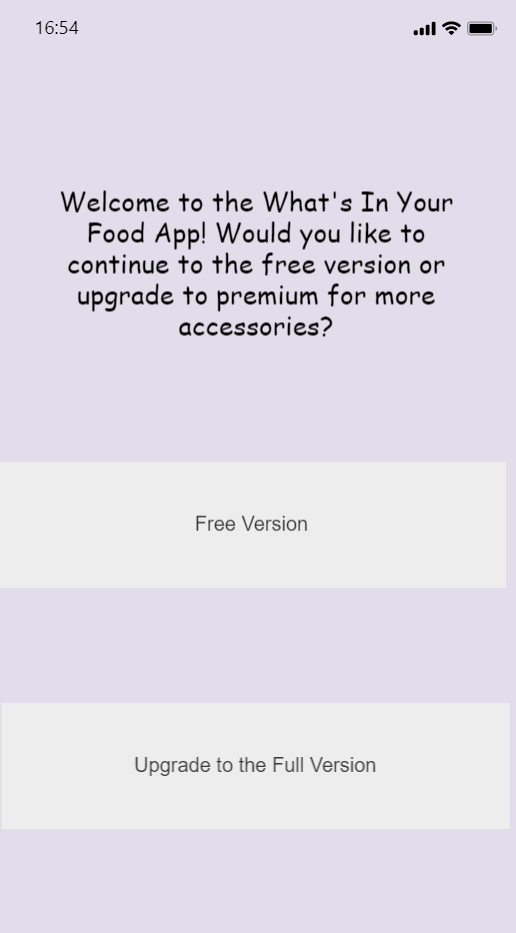

Problem Statement: What's in Your Food?
Our users are frustrated because many of their everyday food products contain unhealthy ingredients and they feel like major food companies are manipulating them. Our solution should provide users with the information to be more knowledgeable when selecting their future food supplies.

Affinity Diagram: What's in Your Food?
My group and I came together to form a diagram of everything we could think of involving what is in your food.
Persona: Four Personas for What's in Your Food.
Four people who make up our taget consumer.

Storyboards: Four comics of average users.
Four short comics representing average users of this product.

Sketching: A few sketches for our app idea.
These sketches outline basic and rough ideas for our planned app/software.
"What's In Your Food" App Prototype
A prototype that lays out the overall feel of the app desired.